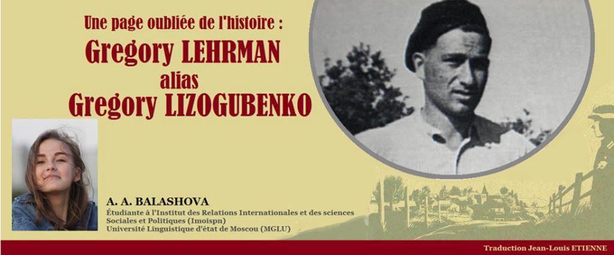
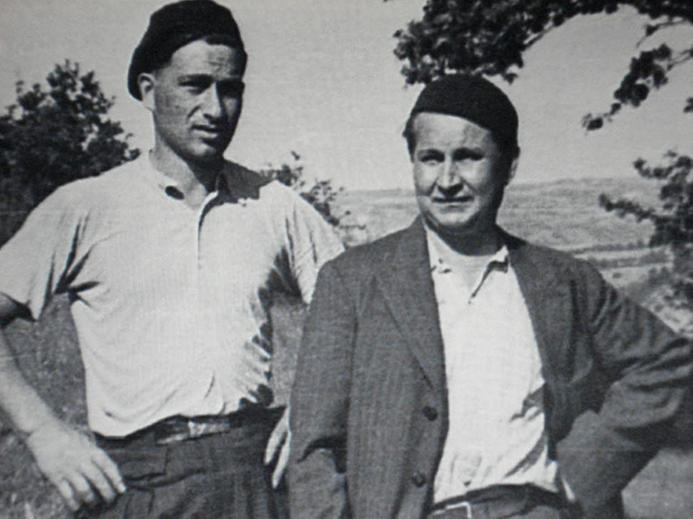
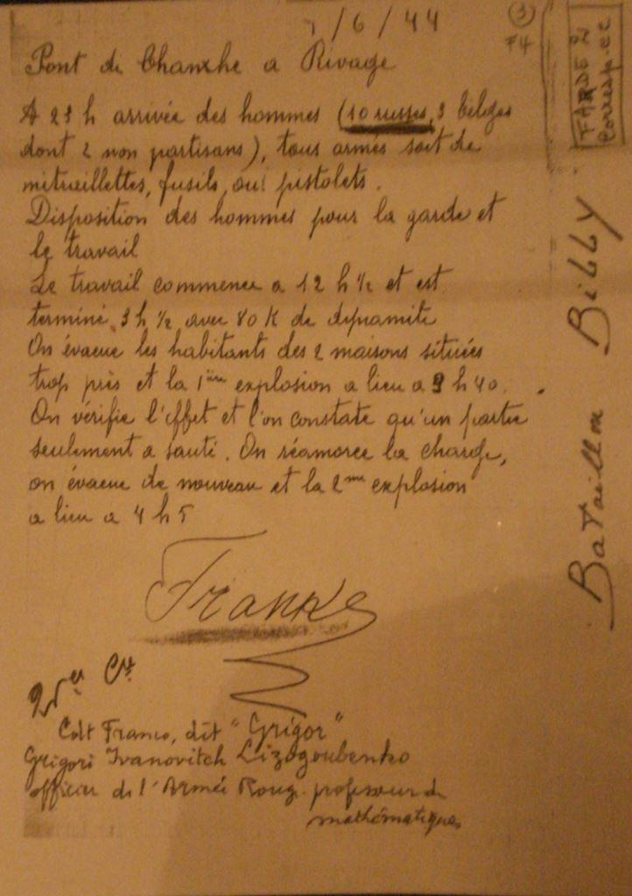

Une page oubliée de l’histoire : Gregory Lehrman alias Gregory Lizogubenko
par A. A. BALASHOVA

La seconde guerre mondiale est à juste titre considérée comme la tragédie la plus sanglante et la plus dévastatrice de l'histoire de la civilisation. Il nous semblerait que dans le cadre d'une période historique aussi importante, il ne devrait pas y avoir de pages oubliées. Cependant, hélas, la réalité est toute différente. L'histoire du mouvement de résistance en Belgique en est un exemple. Si en Europe, on a une vague connaissance de l'existence de ce maquis, il n’en est pas fait mention dans les manuels russes. C’est d’autant plus surprenant lorsqu’on apprend que nos partisans soviétiques ont apporté une contribution importante au développement de ce mouvement de résistance. Je tiens dès lors, à interrompre cette tradition et parler dans cet article d'un des héros de ces événements. Il s'appelle Gregory Lehrman, dont l'histoire nous est connue grâce à sa cousine Sulamith Lehrman.
À la fin de ses études secondaires, Gregory, âgé de 18 ans, a été affecté à la frontière occidentale dans la région de Lviv. Une fois dans la zone frontalière, les troupes réalisent qu’elles sont profondément derrière les lignes ennemies. Gregory doit détruire ses documents et insignes et ramasser les documents d'un des soldats tués par les Allemands. Bien que de telles actions auraient été mal vues en URSS, dans cette situation, il n'a pensé qu’aux risques qu’il prenaitsi les Allemands apprenaient son origine juive. Dès lors, il a cessé d'être Lehrman Gregory Caesarevich, lieutenant juif et est devenu désormais Lizogubenko Gregory Ivanovitch, soldat ukrainien.
Gregory a été capturé en Ukraine occidentale. C’est en arrivant dans l'un des villages où il est arrêté par les habitants de la commune avec toute son équipe. Les paysans effrayés ont remis ensuite Gregory et ses camarades aux Allemands qui passaient par ce village.
Il est alors envoyé dans un camp de prisonniers dans le nord de l’Allemagne. Dès le premier jour, Gregory ne pense qu’à s’évader. Il lui est insupportable de voir des compatriotes désespérés par des communiqués de propagande de la radio sur la chute de Moscou. Il refuse fermement de le croire. Pourtant, parmi les camarades de son bloc, celui qui loge juste sous sa couchette, à trois étages, semble animé par la même volonté. Il s’agit d’Evgeny Dotsenko avec qui il va nouer une amitié indéfectible. Leur histoire est désormais liée et les deux hommes ne se quitteront plus.
Gregory, qui parlait un peu allemand, a eu des conversations avec un garde allemand âgé. Un jour, ce dernier lui tend un morceau de pain. Gregory, qui a beaucoup peint avant la guerre, demande à l'Allemand d'apporter une photo de sa femme et du papier : il ferait son portrait. C'est exactement ce qu'il a fait. Tard dans la soirée, à la lueur d'une ampoule, Gregory peint. L'Allemand l'a aimé et il a apporté une autre photo. Et puis un autre.
Le chef des gardiens découvre cela et décide de profiter des talents de l’artiste. Il apporte également des photographies, très régulièrement, mais ce sont des photos de personnes différentes. Il a vraisemblablement débuté un marché de vente des portraits réalisés par Grégory.
Afin de donner un peu d’espace à son protégé, mais sans doute aussi pour une relative discrétion à ses affaires, le chef des gardiens donne à Grigory une petite pièce avec une fenêtre donnant sur la rue. Il autorise par ailleurs aussi Evgeny Dotsenko à travailler là afin d’assembler des cadres pour les dessins de son ami.

G. Lehrman (g) et E. Dotsenko (1943)
La seule fenêtre du petit local dédié aux deux prisonniers comportait bien sûr des barreaux de fer. Un jour, Evgeny ramasse un morceau de scie à métaux dans le tas d’ordures. Désormais le plan d’évasion se dessine pour les deux hommes. Ils commencent à élaborer un plan d'évasion, selon lequel ils prévoient de passer par l'Allemagne, la Suisse et l'Angleterre pour se rendre à Mourmansk, qui n'est pas encore occupée, afin de retourner combattre l'ennemi jusqu'au dernier. Tandis que l’un scie l’autre frappe avec un marteau sur les barreaux de la fenêtre et, dans la nuit du 22 juin 1942, profitant du grondement d’un bombardement par les Alliés d’installations proches du camp, les deux compères s’échappent.
Il est incompréhensible pour l'esprit d’imaginer comment ils ont traversé un pays hostile sans papiers, sans armes, sans nourriture et sans eau (les crackers stockés se sont épuisés le deuxième jour), sans argent etsans cartes.
Dotsenko en témoigne : « Nous avons marché la nuit, pendant la journée nous nous sommes installés quelque part pour nous reposer.Nous avons marché, affaiblis par la faim, parfois seulement 2-3 kilomètres par nuit. Nous n'y sommes pas allés quelques jours, mais plusieurs mois ! »
Trois fois on leur a tirédessus, mais ils ont poursuivi leur escapade dans une Allemagne inconnue et sombre.
Un jour, ils parviennent à obtenir des vêtements, afin de retirer l'uniforme des prisonniers et ne pas attirer l'attention sur eux-mêmes. Cependant, tout ne se passe pas comme prévu et ils trouvent étranges ces gens qui parlent une langue qui ne leur est pas connue. Où sont-ils arrivés? Où est la Suisse?
Bientôt, Gregory et Evgeny tombent dans une zone boisée, où ils décident de s'installer et de construire une cabane afin de survivre à l'hiver. Un jour, alors qu’ils sontà la recherche de nourriture, ils rencontrent un grand homme avec une arme à feu à l'envers. Il s'est avéré être un forestier local. « Où sommes-nous ? » lui demandent les Soviétiques. « C'est la Belgique, les forêts ardennaises.» Avec l'aide du forestier,Gregory et Evgeny se présentent aux participants du mouvement de Résistance belge et décident de rejoindre leurs rangs. Plus tard, ils organise un commando séparé, qui comptant environ vingt personnes, comprenant essentiellement les prisonniers évadés des camps, qui rejoindront tous le régiment de Résistance belge. Désormais, la nouvelle vie de l'équipe est extrêmement remplie d'événements de résistance. Ils font sauter des chemins de fer, des ponts pour ne pas permettre aux troupes allemandes de ravitailler les armes sur la fontaine orientale. Ils tuent également des traîtres et commettentdiverses actions de sabotage.
Le 12 septembre 1944, alors que le deuxième front est déjà ouvert,Gregory et le détachement sont allés, après une opération de sabotage,rencontrer les alliés et leur remettre les prisonniers. Dans les jours et les semaines qui suivent, de lourds chars américains roulent le long de l'autoroute. Voyant un groupe d'hommes armés, le commandant de la colonne a arrête sa voiture, en regardant de plus près, il a facilement sauté du char et court à leur rencontre. «Je l'ai embrassé. Le commandant m'a frappé sur l'épaule et m'a regardé dans les yeux."- écritGregory. "Les russes?!» l'étonnement du commandant était sans limite, il était si surprenant de rencontrer les alliés russes si loin du front de l'Est. Après l'arrivée des Alliés sur le territoire belge, la tâche des partisans consistait principalement à nettoyer les unités allemandes restantes.
À la fin de la guerre, Gregory se présenta au commandement américain, d'où il fut transféré au commandement soviétique, qui l'envoya temporairement dans un camp de filtrage pour des contrôles. Mais six mois ont passé, on ne voyait pas la fin de cette vie de camp. Gregory s'est échappé du camp, mais cette fois pour se rendre à Kiev. Comme il le voulait, il est devenu un artiste. Pour son action héroïque dans la Résistance belge, la reine de Belgique décernera la Médaille de l'Ordre du Roi Léopold II à Gregory Lehrman.
Gregory Lehrman est mort à Kiev en janvier 2000,à l'âge de 85 ans.
L'histoire de Gregory Lehrman-Lizogubenko, Evgeny Dotsenko, d'autres partisans soviétiques qui ont combattu en Belgique dans les rangs du mouvement de Résistance est notre histoire. Pourtant, si c'est le cas, comment ses pages d’héroïsme peuvent-elles être oubliées ? Pourquoi ne parlons-nous pas de cela, ne racontons-nous pas aux enfants des leçons d'histoire sur les héros du front de Résistance occidental ? Pourquoi si peu de faits sont connus à leur sujet ? On ne peut pas laisser ces pages rester dans l’ombre. Cette période attend ses historiens, ses chercheurs. La tâche de notre génération est de faire en sorte que tous les héros trouvent enfin leurs noms, qu’ils reçoivent les honneurs dus, que l'histoire du mouvement de Résistance soit écrite, afin que nous nous souvenions de tous ceux qui se sontbattus pour notre liberté.
A.A.B.
SOURCES
1. L’essai de Sulamif Lehrman pour le magazin « Вестник » (Лерман С. Военная история моего кузена // журнал Вестник // Режим доступа: http://www.vestnik.com/issues/2000/1121/win/lerman.htm (дата обращения: 22.06.2020).
2. L'article de Vladimir Volodine pour la publication « Le mot Juif » (Еврейское слово», Володин В. Второй фронт Григория Лермана // Еврейское слово // Режим доступа: https://web.archive.org/web/20071031125446/http://www.e-slovo.ru/195/6pol1.htm).
3. Le programme « Guerre secrète » sur la chaîne» « Capital » (Сценарий программы «Тайная война»// Информационно-аналитическое издание Чекист.ru // Режим доступа: http://www.chekist.ru/article/2732 (дата обращения 22.06.2020).
Partager cette page